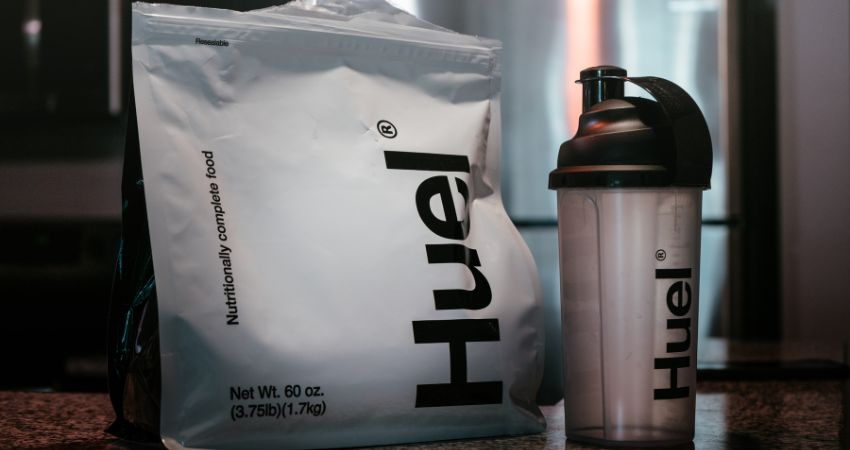

Recuerde que la alimentación es la base de la nutrición de todas las personas, los suplementos nutricionales deben ser un complemento que ayuda a potenciar el rendimiento deportivo, pero NO reemplaza la alimentación.
Cafeína: Tiene efecto en el sistema nervioso por lo cual disminuye la sensación de fatiga y permite mantener
el ritmo de las actividades durante más tiempo. Tomar 3 mg/Kg 60 minutos antes del entrenamiento.
Precauciones: puede incrementar la frecuencia cardiaca, alterar la motricidad fina, ansiedad y
sobreexcitación, tomar al menos 5 horas antes de dormir.
Bebidas o hidratantes deportivos: Consumir en entrenamientos mayores a 60 minutos. Su dosificación dependerá
de la marca y sus indicaciones. Ver recomendaciones de hidratación durante
el entrenamiento.
Suplemento de electrolitos o sales de rehidratación: Son una alternativa a las bebidas hidratantes por lo cual
deben ser consumidos con abundante agua, según indicaciones
de la marca. Consumirlas cuando el entrenamiento es mayor a
90 min, especialmente en lugares con alta humedad y/o altas
temperaturas.
Geles, masticables (gomitas) y barras: Pueden consumirse como fuente de carbohidratos durante entrenamientos
mayores a 90 minutos y de intensidad moderada-alta. Todos deben
consumirse con agua.
Creatina: Disminuye la acidez muscular por lo que reduce la sensación de fatiga, mejora el rendimiento en
ejercicios de resistencia y promueve el almacenamiento de glucógeno. Tomar 3 a 5 g al día en una
sola toma previo al entrenamiento. Precauciones: Genera retención de líquidos. Altamente
recomendado para incremento de masa muscular.
Recuperantes, post o pre-entrenos: Estos suplementos aportan todos los macronutrientes por lo cual pueden
emplearse en refrigerios como alimentación pre o post entrenamiento,
su dosificación dependerá de las indicaciones de la marca. Recuerda que
debe acompañar las comidas, mas no reemplazarlas. Si tu objetivo es
bajar peso NO se aconseja su consumo debido a su alto aporte de
carbohidratos.
Proteína: Puede emplearse proteína concentrada o aislada, dado que todas son fuente de proteína
de alto valor biológico, además de aportar carbohidratos que ayudan a la recuperación muscular.
Su dosificación dependerá de las indicaciones de la marca. Se debe consumir en los refrigerios
posterior al entrenamiento acompañando los demás alimentos. Altamente recomendado para
incremento de masa muscular.
Proteína Hidrolizada: Este suplemento sólo aporta proteína por lo que es ideal para la pérdida de peso,
además de tener una absorción más rápida lo que facilita la recuperación muscular.
Usar después del entrenamiento, puede reemplazar el alimento proteico del refrigerio,
sin embargo, debe consumirse con los demás alimentos indicados en la minuta patrón.
Su dosis dependerá de la marca y las indicaciones que ésta tenga.
Jugo de remolacha o nitratos: Mejora la contracción muscular, mejora la función inmunológica y la presión
arterial, mejora la resistencia cardiovascular. Tomar 6.4 a 12.8 mg/Kg de
nitratos que equivalen a 500 g de remolacha antes del entrenamiento. Precauciones:
Consumo excesivo puede causar dolor abdominal, náuseas, vómito o diarrea.
Beta alanina: Mejora el rendimiento en la resistencia de alta intensidad, disminuye sensación de fatiga y
mejora las adaptaciones del entrenamiento. Tomar 1.2 g al día 60 minutos antes del entrenamiento.
Precauciones: Puede generar hormigueo en extremidades durante los primeros 60 min posterior a su
consumo. Altamente recomendado para incremento de masa muscular.
Carnitina: No se recomienda su uso, no hay evidencia de que ayude con la pérdida de grasa ni con el incremento
de fuerza muscular.
BCAA: No se recomienda su uso, no hay evidencia de que mejore la resistencia, que disminuya la fatiga, ni
que ayude en la recuperación muscular.